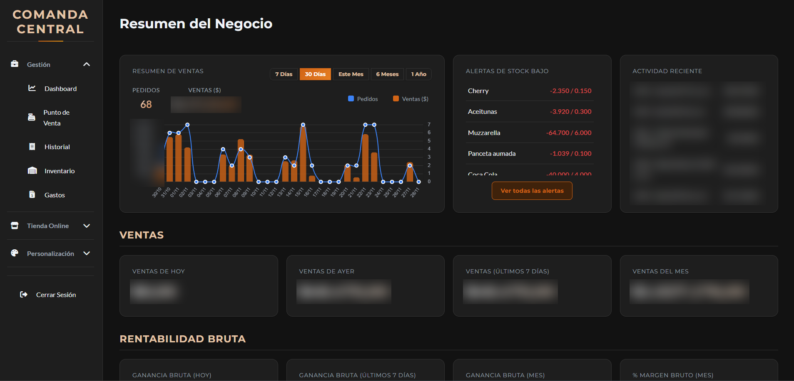
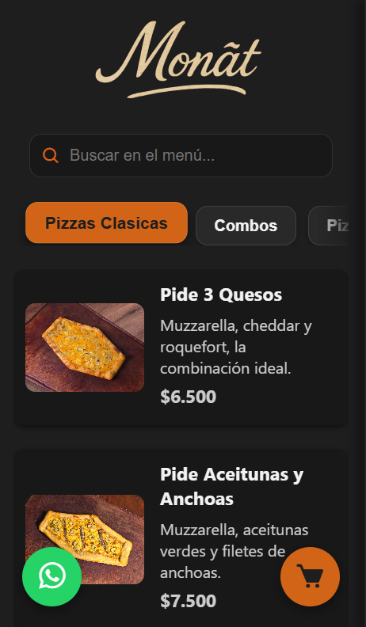

SaaS gastronómico · Node.js + PostgreSQL
Comanda Central
Nació para resolver el problema de mi propia pizzería y terminó siendo un SaaS con gestión centralizada de sucursales: toma de comandas, inventario, análisis de ventas y costeo real por producto con recetas anidadas.
El problema
Un negocio gastronómico sabe cuánto vendió, pero casi nunca cuánto ganó: el costo real de un plato depende de sub-recetas cuyos insumos cambian de precio todo el tiempo.
Lo que construí
- Punto de venta de tres paneles, operable por completo con el teclado, con impresión de ticket.
- Costeo con consultas recursivas en PostgreSQL, que resuelve recetas dentro de recetas.
- Tablero de análisis: ventas, ticket promedio, ganancia bruta y neta, comparativas, horario pico y productos más vendidos.
- Inventario y compras: el stock se descuenta con la venta y el alta de una compra genera el gasto e impacta el inventario en una sola transacción.
- Editor de menú con categorías, adicionales y combos.
- Editor del sitio público de cada negocio, con vista previa en vivo.
Resultado
- 8negocios
- 3cadenas
- 15sucursales
Capturas

assets/proyectos/comanda-central/01-pos.png

assets/proyectos/comanda-central/02-dashboard-bi.png

assets/proyectos/comanda-central/03-costeo-receta.png

assets/proyectos/comanda-central/08-sitio-publico.png
Stack
Node.js · Express · PostgreSQL · JavaScript · Chart.js · Cloudinary · Render · Vercel